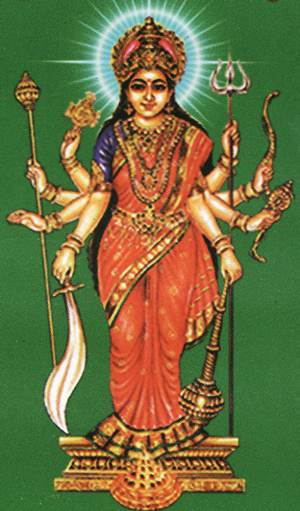

|
|||||
lordess Sankari devi
|  |
Aadi Shankaracharya’s Stotram starts with Shankari Devi Shakthi Peeth. Here Devi Sati’s groin had fallen. Sati Devi is worshipped as Shankari Devi and Lord Shiva as Trikoneshwara. The temple is located in Trimkomali, or Trincomalee on the eastern coast of Sri Lanka. The place Trinconmalee means a triangular shaped hill (Tri- cona- malee or malai). The temple is well connected by roads. There is also a Kali temple which people visit enroute to Shankari Devi temple.The Temple of Sri Shankari Devi according to the priest's in Trincomalee, say that the Portuguese who invaded the island in the 17th century completely cannon balled from their ship and demolished the cliff top Devi temple. In its site stands a lone pillar, as a mute spectator. The present Shiva temple which is quite well known locally than the Shankari Temple was a recent construction. |
|
The Shiva is called as TRIKONESHVARA (Probably because it is in Trincomalee which is truly TRI CONA MALAI- meaning triangle shaped hill). There is a small Devi Shrine built adjacent the Shiva temple. The famed Bilva tree which is perched right on the edge of the hill some hundred meters above the Indian ocean. It is a exhilarating and spectacular sight to behold. All round, silence reflects which is needed most in this war torn nation rightfully called as a paradise. There is also a more famous Kali temple in the heart of the town to which devotees can make a visit en-route from the Shankari Temple. According to one Puranic reference, Parvati Devi requested Lord Shiva to build a palace for her. But Shiva, used to living in Mount Kailash did not heed to her request. After several requests from Parvati, Lord Shiva finally relented and asked Vishwakarma to build a palace. Vishwakarma built a beautiful palace in Lanka Dweep for Parvati Devi. Lord Shiva and Parvati came to Lanka to perform the Griha Pravesh of their palace. Ravana was doing a rigorous penance to get the blessings of Lord Shiva. Lord Shiva and Parvati Devi were pleased with the penance of Ravana and Lord Shiva blessed Ravana with boons. Ravana, a Brahmin by birth and master of all the four Vedas was a great devotee of Lord Shiva. Pleased by his penance, Parvati Devi asked Ravana to perform the rituals associated with the Griha Pravesh of their palace. Parvati Devi was impressed with Ravana who did the Griha Pravesh rituals and wanted to bless him with a boon. She asked Ravana to ask for a boon, and he asked for the Lanka palace. Parvati Devi, though saddened initially by the wish of Ravana granted the boon and gave away the palace as Dakshina. However, Ravana requested Parvati Devi to stay at the palace. Parvati Devi agreed to stay at the palace as Shankari Devi with the condition that she would stay at the palace, as long as Ravana pays heed to her words. Trouble began when Ravana, overcome by carnal desire, kidnapped Seetha and brought her to Lanka. Shankari devi was angered by this base action of Ravana. She asked him to leave Seetha and return her to Rama. But lust clung to Ravana like a leech and he did not obey Devi’s advice. Highly disappointed, Shankari left the island country and with her left all the peace and prosperity of the kingdom.When Vibheeshana was crowned by Rama as the emperor of Lanka, he prayed that Shankari devi once again take residence in the island nation. Shankari Devi accepted his prayers and re-entered her temple, bringing glory to Lanka once again. |